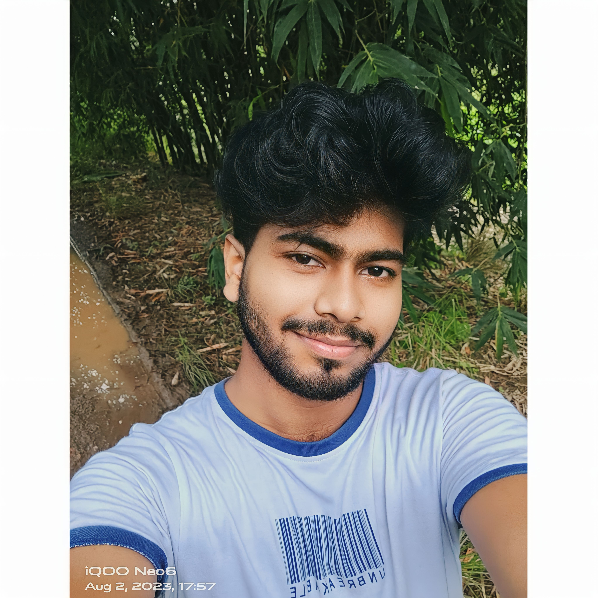

Resume And Portfolio

Sayan Bera
About Me
Hello! I'm Sayan Bera, a dedicated Computer Science Engineering student at Kalinga Institute of Industrial Technology (KIIT), Odisha. I am passionate about programming and consider myself a programming enthusiast. The world of coding fascinates me, and I find joy in solving complex problems and creating efficient solutions.
Being an avid learner, I am always eager to explore new technologies and stay updated with the latest trends in the field of computer science. My enthusiasm for programming extends beyond the classroom, as I actively participate in coding contests to challenge and enhance my skills.
Education Background
Ghoshpur High School
Completed 12th grade from Ghoshpur High School
 Visit KIIT University
Visit KIIT University
Kalinga Institute Of Industrial Technology
Bachelor of Science in Computer Science and Technology, Kalinga Institute Of Industrial Technology
Hard Skills
programming Languages :
- Java
Web Development:
- HTML
- CSS
- JavaScript
Video Editing
- Adobe Premier Pro
Soft Skills
Teamwork:
- Collaborative and able to work effectively in team environments
- Open to receiving and providing constructive feedback
Problem Solving:
- Analytical thinker with strong problem-solving skills
- Proactive in identifying and addressing challenges
Time Management:
- Efficient at managing time and prioritizing tasks to meet deadlines
Leadership:
- Demonstrated leadership skills in various group projects and activities
- Ability to take initiative and guide a team toward common goals
Socials


Contact
 Sayanbera938@gmail.com
Sayanbera938@gmail.com
 +91-9065593854
+91-9065593854
 721131, Haur, East Mednipur, West Bengal, India
721131, Haur, East Mednipur, West Bengal, India